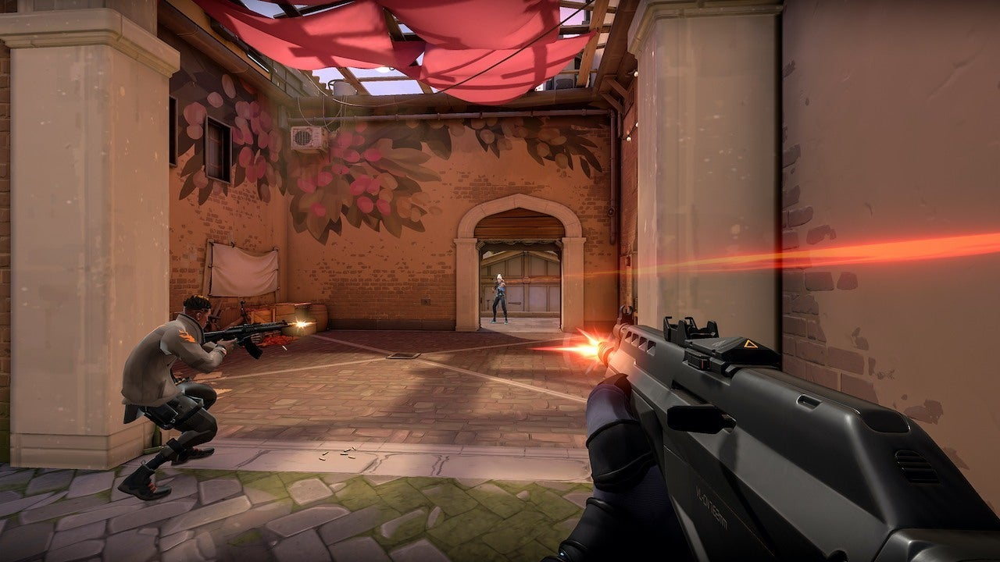

Bem-vindo(a) ao projeto
Este site foi desenvolvido como projeto academico da disciplina de Desenvolvimento Front-end para Web, com o objetivo de aplicar, na pratica, todo o conteudo de HTML basico e HTML avancado estudado em sala. O tema escolhido foi o jogo VALORANT, desenvolvido pela Riot Games.
Aqui voce vai encontrar a historia do jogo, explicacoes sobre a gameplay, lista de agentes, mapas, armas, modos de jogo, sistema de ranks, trilha sonora, videos e ate um formulario de inscricao para um torneio fictício.
O que e o VALORANT?
VALORANT e um jogo eletronico do genero FPS tatico, gratuito, jogado no formato 5 contra 5. Cada partida acontece em rodadas, onde um time ataca (tentando plantar o Spike) e o outro defende (tentando impedir a explosao ou desarma-lo). Alem da mira e pontaria, o jogo exige trabalho em equipe e uso estrategico das habilidades unicas de cada agente.

Navegue pelo site
Use o menu no topo da pagina para explorar cada secao. Algumas sugestoes: